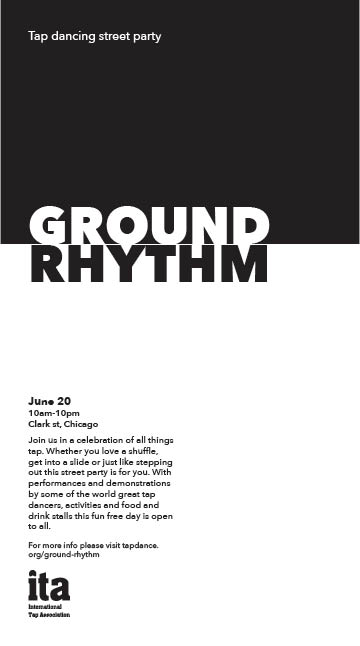

Tap Dancing street party
More Swiss Design inspired work. This is for a print ad to promote a tap dancing street party.
Alternative idea:

More Swiss Design inspired work. This is for a print ad to promote a tap dancing street party.
Alternative idea: